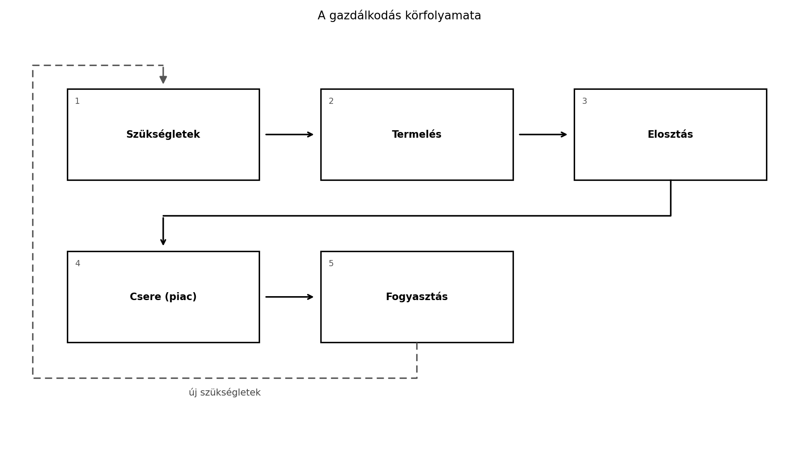
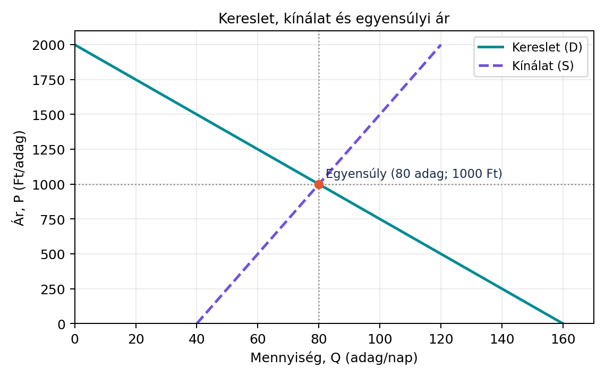

Egy szakács reggel áruátvételkor azt kérdezi: miért drágult meg a tojás? Ebéd után pedig azt látja, hogy a menüből sok adag megmaradt, a vendég inkább a szomszédos étterem menüjét választotta. Mindkét jelenség a gazdálkodás és a piac működésére vezethető vissza. Ha érted a kereslet, a kínálat és az ár összefüggését, jobban megérted a beszerzési árak mozgását, az étlap árazását és azt is, miért érdemes a vendégek igényeit figyelni.
Képzeld el egy piac reggelét. A zöldségárus szeretné drágábban adni a paradicsomot, mert kevés termett, és a vevők sokat keresik. A vevők viszont olcsóbban szeretnének vásárolni. Addig alkudnak, amíg valamilyen áron meg nem egyeznek. Ha túl magas az ár, a vevők elmennek; ha túl alacsony, az árusnak nem éri meg. A piacon tehát a vevői szándék és az eladói szándék találkozik, és ebből alakul ki az ár.
Definíció. A gazdálkodás olyan emberi tevékenység, amelynek során a rendelkezésre álló szűkös erőforrásokat – munkaerőt, alapanyagot, eszközt, pénzt, időt – úgy használjuk fel, hogy a lehető legjobban elégítsük ki a szükségleteket.
Definíció. A szükséglet az ember hiányérzete, amelyet meg akar szüntetni. A szükséglet lehet fizikai (éhség, szomjúság, meleg) vagy társadalmi (biztonság, elismerés, közösséghez tartozás).
Definíció. Az erőforrás mindaz, ami a szükségletek kielégítéséhez felhasználható: természeti kincsek, emberi munka, gépek, alapanyagok, energia, pénz, tudás.
Definíció. A javak a szükségletek kielégítésére alkalmas dolgok és szolgáltatások. Anyagi javak például az élelmiszer, a tányér, a konyhai gép. Nem anyagi javak például a szakácstudás, a vendég kiszolgálása, a jó hangulat.
A gazdálkodás alapkérdése az, hogy a szűkösen rendelkezésre álló erőforrásokból mit, mennyit, hogyan és kinek állítsunk elő. A konyhán ez így jelenik meg: milyen ételt tegyünk az étlapra, mekkora adagot készítsünk, melyik technológiát használjuk, és milyen áron kínáljuk a vendégnek.
A szükségleteket többféleképpen csoportosíthatjuk.
| Csoportosítási szempont | Típus | Példa |
|---|---|---|
| A szükséglet jellege | Alapvető (fiziológiai) szükséglet | élelmiszer, víz, meleg, pihenés |
| Magasabb rendű szükséglet | tanulás, elismerés, önmegvalósítás | |
| A szükséglet alanya | Egyéni szükséglet | egy vendég ebédet kér |
| Társadalmi szükséglet | közétkeztetés, iskolai menza | |
| A kielégítés időpontja | Napi rendszerességű szükséglet | naponta étkezés |
| Időszakos szükséglet | ünnepi ebéd, rendezvény |
A pszichológiai szükségletelmélet – gyakran piramisként ábrázolják – azt mondja: először az élettani szükségleteket kell kielégíteni, utána a biztonságot, a szeretet és az összetartozás igényét, majd a megbecsülést, végül az önmegvalósítást. A vendéglátó szakács ebből azt tanulhatja, hogy a vendég nemcsak jóllakni akar, hanem biztonságos ételt, tiszta környezetet, kedves kiszolgálást és élményt is szeretne.
A gazdálkodás nem egyszeri cselekvés, hanem ismétlődő körfolyamat.

A folyamat a szükségletekből indul. A termelő – például a konyha – erőforrásokat használ fel, hogy ételeket készítsen. Az elkészült javakat el kell juttatni a fogyasztóhoz, ez az elosztás. A csere a piacon történik: a vendég pénzért megvásárolja az ételt. A fogyasztás során a vendég elfogyasztja az ételt, és ezzel kielégíti a szükségletét. A fogyasztás visszahat a termelésre: ha az étel ízlik, a vendég visszatér, és új szükségletet jelez.
A pénz kialakulása előtt a csere közvetlenül áru–áru formában történt. Ez a csere úgy működött, hogy a szakács halat cserélt kenyérre. A közvetlen cserének azonban feltétele volt az igények kölcsönös egybeesése, ezért nehézkes volt. Később egyes árukat – sót, állatot, kagylót, nemesfémet – csereeszközként kezdtek használni. Innen alakult ki a pénz.
Definíció. A pénz olyan általánosan elfogadott csereeszköz, amelyben kifejezik az áruk értékét, és amellyel fizetni lehet. A pénz fő funkciói: csereeszköz, értékmérő, fizetési eszköz, felhalmozási eszköz.
A konyhán a pénz teszi lehetővé, hogy a beszállítótól alapanyagot vásárolj, az ételt eladd, és az árbevételből újra vásárolj. Ez a pénzáramlás a gazdálkodás motorja.
A nemzetgazdaság az adott országban folyó termelő, elosztó és fogyasztó tevékenységek összessége. A gazdasági tevékenységeket szektorokba soroljuk.
| Szektor | Jellemző tevékenység | Példa |
|---|---|---|
| Primer (elsődleges) szektor | Nyersanyag-kitermelés | mezőgazdaság, halászat, bányászat |
| Szekunder (másodlagos) szektor | Feldolgozóipar és építőipar | élelmiszeripar, gépgyártás, konyhatechnológiai berendezésgyártás |
| Tercier (harmadlagos) szektor | Szolgáltatások | vendéglátás, kereskedelem, oktatás, egészségügy, szállítás |
A vendéglátás a tercier szektorba tartozik, mert nem alapanyagot termel ki a földből, és nem nagyüzemi feldolgozóipari terméket gyárt, hanem szolgáltatást nyújt: az alapanyagból ételt készít, és azt a vendégnek helyben vagy elvitelre kínálja. Emellett a vendéglátás szoros kapcsolatban van a mezőgazdasággal (alapanyag) és az élelmiszeriparral (feldolgozott termékek), ezért a szektorok egymásra épülnek.
A statisztikai besorolás szerint a vendéglátás a szálláshely-szolgáltatás és vendéglátás ágazatban található. (ellenőrizendő: aktuális TEÁOR besorolás és ágazati kódok)
Definíció. A piac a kereslet és a kínálat találkozásának kerete, ahol az eladók és a vevők árukat, szolgáltatásokat, munkaerőt vagy pénzt cserélnek, és ahol kialakul az ár.
A piac tehát nemcsak a hagyományos, kézzel fogható helyszín (pl. a zöldségpiac), hanem minden olyan kapcsolatrendszer, ahol adásvétel történik. Ilyen piac a konyhai beszerzési piactér, az éttermi szolgáltatások piaca, de az online rendelési felület is.
A piac fajtái többféleképpen csoportosíthatók.
| Csoportosítási szempont | Típus | Példa |
|---|---|---|
| A cserélt jószág jellege | Fogyasztási cikkek piaca | ételek, italok, konyhai eszközök |
| Termelési tényezők piaca | munkaerőpiac, alapanyagbeszerzés | |
| Földrajzi kiterjedés | Helyi piac | városi vendéglátás, helyi termelői piac |
| Országos piac | országos étteremlánc, nagykereskedő | |
| Nemzetközi piac | import tengeri hal, kávé, fűszerek | |
| A verseny jellege | Tökéletes verseny | sok eladó, azonos termék |
| Monopolisztikus verseny | sok vendéglátó, de mind másként különbözik | |
| Oligopólium | kevés nagy beszállító | |
| Monopólium | egyetlen helyi vízmű, vagy egyedülálló rendezvényhelyszín |
A piac történeti típusai is fejlődtek. Az önellátó gazdálkodásban a család vagy a háztartás saját szükségletére termelt. Az árutermelés megjelenésével a termelő már eladásra termelt, és a piacon keresett vevőt. A modern piacgazdaságban a vállalatok és a háztartások kölcsönösen egymásra vannak utalva: a háztartások munkát és fogyasztási igényt kínálnak, a vállalatok munkahelyet és terméket.
A piacon három alapfogalom kapcsolódik össze: a kereslet, a kínálat és az ár.
Definíció. A kereslet az a mennyiség, amelyet a fogyasztók adott áron meg akarnak és meg tudnak vásárolni. A kereslet nem azonos a vágyakozással: ha valaki szeretne egy drága ételt, de nincs rá pénze, az nem kereslet.
Definíció. A kínálat az a mennyiség, amelyet az eladók adott áron el akarnak és el tudnak adni. A kínálatot a termelési költség, a rendelkezésre álló kapacitás és az elérhető ár határozza meg.
Definíció. Az ár az áru pénzben kifejezett csereértéke. A konyhai gyakorlatban az étlapár, a beszerzési ár és a bérleti díj is ár.
A kereslet törvénye: általában ha az ár csökken, a keresett mennyiség nő; ha az ár nő, a keresett mennyiség csökken. Ezt mutatja, hogy egy olcsóbb menü általában több vendéget vonz, mint egy nagyon drága.
A kínálat törvénye: általában ha az ár nő, a kínált mennyiség nő; ha az ár csökken, a kínált mennyiség csökken. A konyha akkor hajlandó nagyobb mennyiséget készíteni, ha az ár fedezi a többletköltséget és a kockázatot.

Ezen a szemléltető ábrán – a közgazdasági tankönyvek szokása szerint – a vízszintes tengely a mennyiséget (adag/nap), a függőleges tengely az árat (Ft/adag) jelöli; más forrásban is így találkozol vele. A keresleti görbe lefelé, a kínálati görbe felfelé tart. A két görbe metszéspontja az egyensúlyi ár és az egyensúlyi mennyiség. Ha az ár az egyensúlyi ár felett van, a kínálat meghaladja a keresletet: túlkínálat alakul ki. Ha az ár az egyensúlyi ár alatt van, a kereslet meghaladja a kínálatot: túlkereslet, azaz hiány alakul ki. A piac az árak mozgásán keresztül az egyensúly felé tart. A görbék meredeksége csak irányt szemléltet, a konkrét számok tanulási adatok.
Definíció. A verseny a piaci szereplők vetélkedése a vevőkért, az erőforrásokért vagy a kedvezőbb feltételekért. A verseny arra ösztönzi a termelőt, hogy jobb minőséget, alacsonyabb árat vagy kedvezőbb kiszolgálást nyújtson.
A vendéglátásban a verseny gyakran monopolisztikus verseny: sok étterem működik egymás mellett, de mindegyik másként különbözik – más az étlap, a hangulat, a helyszín, a kiszolgálás. Ezért a vendéglátó nem elsősorban az árcsökkentéssel, hanem a megkülönböztetéssel versenyezhet: jellegzetes konyhát, gyors ebédet, családias légkört vagy különleges rendezvényt kínál.
A verseny lehet árverseny, minőségi verseny és szolgáltatási verseny. A tisztességes versenyt jogszabály védi; a fogyasztó megtévesztése, a kartell és a versenytársak összehangolt piacfelosztása tilos. (ellenőrizendő: hatályos versenytörvény és a GVH eljárási keretei)
A kereslet és a kínálat összefüggése egyszerű lineáris függvényekkel is bemutatható. A konyhai gyakorlatban ezt a számítási modellt használjuk, hogy megértsük, hogyan alakulhat ki az ár.
Számítás. Egy menza büféjében a napi kereslet és kínálat nagyságát közelítően az alábbi függvények írják le:
ahol a mennyiség adag/nap, az ár Ft/adag.
Adott: - adag/nap - adag/nap
Keresett: - egyensúlyi ár - egyensúlyi mennyiség
Képlet és behelyettesítés: Az egyensúly feltétele, hogy a keresett és a kínált mennyiség egyenlő.
A mennyiség:
Ellenőrzés: A kínálati oldallal számolva ugyanazt kapjuk.
Ha az ár 1000 Ft/adag, akkor a kereslet és a kínálat éppen 80 adag; ez a fenti ábra jelölt egyensúlyi pontja. Ha az ár például 1400 Ft lenne, a kereslet adag, a kínálat adag: 48 adag túlkínálat keletkezne. Ez a példa szándékosan egyszerű, hogy a mechanizmust mutassa; a valós árakat a beszerzési költség, a rezsi, a munkabér és a verseny is alakítja. (ellenőrizendő: a példa számai tanulási adatok)
A szakács a piac törvényeit naponta érzi. Ha egy alapanyag kínálata csökken – például a tojás iránti kereslet nő, de a termelés csökken –, a beszerzési ár emelkedik. Ilyenkor a konyhafőnök dönthet úgy, hogy megemeli az étlap árat, lecseréli az ételt, vagy kisebb adagot kínál. Ha a vendég nem fogadja el a magasabb árat, a kereslet csökkenhet, és a konyha bevételt veszít.
A kínálati oldalról a konyha is szereplő: ha sok hasonló étterem van, a konyha étlapja áremelésre csak akkor képes, ha a vendég valamiért éppen azt az éttermet választja. Ezért fontos a kereslet becslése. A későbbi A vendéglátás fogalma, főtevékenységei és folyamatai alfejezetben ezt használjuk fel, amikor a vendéglátás piaci működését írjuk le. Az egyensúlyi árból közvetlenül bevétel számolható: bevétel = ár × eladott adag, például 1000 Ft × 80 adag = 80 000 Ft/nap. A bevétel százalékos arányait (például az anyagköltség-szintet) a Százalékszámítás, kerekítés, mértékegységek és statisztikai ábrázolás, az árbevétel-elemzést az Ételkalkuláció, árengedmény, felár és ár-bevétel elemzés alfejezet tárgyalja.
Továbbvitt eredmény. A kereslet–kínálat–ár összefüggés és az egyensúlyi ár gondolata az A vendéglátás fogalma, főtevékenységei és folyamatai alfejezetben a vendéglátó piaci szereplőként való elemzését segíti. Az Ételkalkuláció, árengedmény, felár és ár-bevétel elemzés alfejezetben pedig az eladott mennyiség és az ár szorzataként számolt bevétel elemzéséhez ad alapot. A fogalmat használni fogjuk akkor is, amikor az étlap árképzésénél a vendég fizetési hajlandóságát és a konyhai kapacitást összevetjük.
A gazdálkodási alapfogalmaknál a minőségellenőrzés azt jelenti, hogy a tanuló pontosan elkülöníti a fogalmakat, és helyesen alkalmazza a piaci összefüggéseket. Ellenőrizd magad:
Hiba. A tanuló a keresletet azonosítja a
vágyakozással.
Ok. Nem veszi figyelembe, hogy a kereslethez
fizetőképesség is kell.
Helyes gyakorlat. Mindig kérdezd meg: van-e pénz a
szükséglet kielégítésére? A konyhán a vendég jelenléte és rendelése a
fizetőképes kereslet jele.
Hiba. A piacot csak a konkrét helyszínnel
azonosítja.
Ok. Nem ismeri fel, hogy az online rendelés, a
beszerzési szerződés és a munkaerőpiac is piac.
Helyes gyakorlat. A piacot úgy értelmezd, mint a
kereslet és kínálat találkozását, függetlenül a fizikai helytől.
Hiba. A versenyt csak árversenyként értelmezi.
Ok. Nem veszi észre, hogy a vendéglátásban a minőség, a
hangulat és a kiszolgálás is versenytényező.
Helyes gyakorlat. Az étlap mellett vizsgáld a
vendégélmény összes elemét: a tálalást, a tisztaságot, a kiszolgálás
gyorsaságát és a foglalás egyszerűségét.
Hiba. A számításban felcseréli a keresleti és
kínálati egyenletet.
Ok. Figyelmetlen behelyettesítés.
Helyes gyakorlat. Írd fel az egyensúlyi feltételt:
keresett mennyiség = kínált mennyiség, és ellenőrizd a végeredményt
mindkét oldalról.
Egy kisvárosi étterem séfje azt tapasztalta, hogy a hétvégi grilles menü árának 10 %-os emelése után 15 %-kal kevesebb adag fogyott. Az étteremvezető elmagyarázta, hogy ez a grilles étel iránti kereslet árrugalmasságát mutatja: a vendég könnyen választ másik ételt, ha a grilles menü drágább. A séf ebből azt tanulta meg, hogy az áremelés előtt érdemes kisebb próbát végezni, vagy olyan ételt emelni, amelynek kicsi a helyettesíthetősége, például a ház specialitása. A hiba az volt, hogy az áremelés nem követte a vendég fizetési hajlandóságát, és nem figyelték előre a forgalom visszaesését. A tanulság: az ár nem csak költségkérdés, hanem a keresletre adott válasz is.
1. feladat (A)
Magyarázd meg a szükséglet és a kereslet közötti különbséget a
vendéglátás példáján!
2. feladat (A)
Sorold be a következő tevékenységeket szektorba: étterem,
búzatermesztés, kenyérgyár, tengeri hal importja, szakács tanfolyam.
3. feladat (B)
Az alábbi keresleti és kínálati függvényekkel számold ki az egyensúlyi
árat és mennyiséget:
,
.
4. feladat (B)
Készíts egyszerű táblázatot a piac fajtáiról a cserélt jószág jellege és
a földrajzi kiterjedés szerint, és mindegyikhez írj egy konyhai
példát!
5. feladat (C)
Egy étterem 10 %-kal emeli az árait, és a forgalom 5 %-kal csökken.
Magyarázd meg, mit jelent ez a kereslet szempontjából, és javasolj
árazási stratégiát a következő hónapra!
6. feladat (D)
A séf a beszállítóval csak az árról tárgyal, a minőséget nem ellenőrzi.
Miért jelent ez piaci kockázatot? Készíts ellenőrzőlistát a beszerzési
döntéshez, amelyben szerepel az ár, a minőség, a szállítási idő és a
kínálati biztonság!
A szükséglet hiányérzet, például éhség. A kereslet az a mennyiség, amelyet a vendég ténylegesen meg tud és meg akar venni. Az éhes ember szükségletet érez, de ha nincs pénze, akkor nem jelenik meg az étteremben, így nem képez keresletet. A konyha számára a fizetőképes kereslet a fontos, mert az hoz bevételt.
Adott:
,
.
Keresett: , .
Egyensúlyi feltétel: .
Behelyettesítés:
Ellenőrzés kínálattal:
Tehát az egyensúlyi ár 800 Ft/adag, a mennyiség 68 adag.
| Csoportosítási szempont | Típus | Konyhai példa |
|---|---|---|
| A cserélt jószág jellege | Fogyasztási cikkek piaca | az étterem által eladott ebédmenü |
| Termelési tényezők piaca | a szakács munkaerőpiacon való elhelyezkedése, alapanyag-beszerzés | |
| Földrajzi kiterjedés | Helyi piac | helyi termelőtől vásárolt zöldség |
| Országos piac | országos beszállítótól rendelt száraztészta | |
| Nemzetközi piac | importált tengeri hal, fűszer, kávé |
A 10 %-os áremelés 5 %-os forgalomcsökkenést okozott. Ez azt jelenti, hogy a kereslet nem túl erősen, de negatívan reagált az áremelésre. A kereslet árrugalmassága 5 % / 10 % = 0,5, kisebb mint 1, tehát rugalmatlan. Ilyenkor az áremelés növeli a bevételt: 1,10 · 0,95 = 1,045, vagyis +4,5 %. (Összevetésül a Valós eset: 1,10 · 0,85 = 0,935 → −6,5 %, rugalmas kereslet.) Az anyagköltség és a fedezet változását is meg kell nézni. A javaslat: mérjük fel, mely ételeknél a vendég kevésbé árérzékeny – például a ház specialitásainál –, és ott kisebb áremelést alkalmazzunk; a könnyen helyettesíthető ételeknél tartsunk alacsonyabb árat, és kövessük a versenytársakat. A stratégia legyen fokozatos és mért adatokra épülő.
Ha a séf csak az árról tárgyal, akkor figyelmen kívül hagyja a minőséget, a szállítási megbízhatóságot és a kínálat stabilitását. Piaci kockázat, hogy a legolcsóbb beszállító rossz minőségű, késedelmes vagy nem biztonságos alapanyagot hoz. Ez a konyhán romlást, ételpazarlást, vendégpanaszt és élelmiszer-biztonsági problémát okozhat.
Ellenőrzőlista a beszerzési döntéshez:
A gazdálkodás a szűkös erőforrások és a szükségletek összehangolása. A szükséglet hiányérzet, a kereslet fizetőképes szükséglet, a kínálat az eladni kívánt mennyiség. A piac a kereslet és a kínálat találkozása, ahol kialakul az ár. A pénz csereeszköz, értékmérő, fizetési eszköz és felhalmozási eszköz. A nemzetgazdaság szektorai: primer, szekunder, tercier; a vendéglátás a szolgáltató, tercier szektorba tartozik. A kereslet törvénye szerint az ár csökkenése növeli a keresett mennyiséget, a kínálat törvénye szerint az ár emelkedése növeli a kínált mennyiséget. Az egyensúlyi árnál a keresett és kínált mennyiség egyenlő. Továbbvitt eredmény. A kereslet–kínálat–ár összefüggést az A vendéglátás fogalma, főtevékenységei és folyamatai alfejezetben használjuk a vendéglátó piaci szerepének elemzésére, az Ételkalkuláció, árengedmény, felár és ár-bevétel elemzés alfejezetben pedig az ár és az eladott mennyiség szorzataként számolt bevétel elemzésére.